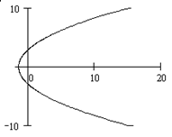

СР № 7. Кривые на плоскости. Поверхности в пространстве.
СР № 7.1
Установить, какая кривая определяется уравнением и построить ее.
Ответ: Прямые  , ,
, ,
, ,СР № 7.2
Установить, какая кривая определяется уравнением и построить ее.
Ответ: Прямые , 
СР № 7.3
Установить, какая кривая определяется уравнением и построить ее.
Ответ: Прямые  ,
,
, СР № 7.4
Установить, какая кривая определяется уравнением и построить ее.
Ответ: Прямые ,
, СР № 7.5
Установить, какая кривая определяется уравнением и построить ее.
Ответ: Прямые ,
СР № 7.6
Установить, какая кривая определяется уравнением и построить ее.
Ответ: Прямые ,
, СР № 7.7
Установить, какая кривая определяется уравнением и построить ее..
Ответ: Прямые
СР № 7.8
Установить, какая кривая определяется уравнением  и построить ее.
и построить ее.
и построить ее.Ответ: Прямые , 
СР № 7.9
Установить, какая кривая определяется уравнением и построить ее.
Ответ: Прямые ,  ,
,
, , СР № 7.10
Установить, какая кривая определяется уравнением и построить ее.
Ответ: Окружность радиуса с
центром в начале координат
СР № 7.11
Установить, какая кривая определяется уравнением и построить ее.
Ответ: Окружность радиуса с
центром в точке
СР № 7.12
Установить, какая кривая определяется уравнением и построить ее.
Ответ: Начало координат
СР № 7.13
Установить, какая кривая определяется уравнением и построить ее.
Ответ: Пустое множество
СР № 7.14
Установить, какая кривая определяется уравнением и построить ее.
Ответ: Точки
СР № 7.15
Написать уравнение кривой, сумма расстояний от каждой точки
которой до точек и равна
.
Ответ:
СР № 7.16
Написать уравнение кривой, модуль разности расстояний от
каждой точки которой до точек и равен 4.
Ответ:
СР № 7.17
Написать уравнение диаметра окружности , перпендикулярного прямой .
Ответ:
СР № 7.18
Вычислить кратчайшее расстояние от точки  до окружности , если , :
до окружности , если , :  .
.
до окружности , если , : .Ответ: 7
СР № 7.19
Определить, как расположена прямая относительно окружности –
пересекает, касается или проходит вне ее, если прямая и окружность заданы
уравнениями :
а) , ;
б) , ;
в) ,  .
.
.Ответ:
а) Пересекает
б) касается
в) проходит вне окружности
СР № 7.20
Построить эллипс .
Найти:
а) полуоси;
б) координаты фокусов;
в) эксцентриситет;
г) уравнения директрис.
Ответ:
а), ;
б), ;
в);
г) ,
СР № 7.21
Установить, что уравнение определяет
эллипс, найти его центр , полуоси,
эксцентриситет и уравнения директрис.
Ответ: , ,  , , ,
, , ,
, , , СР № 7.22
Определить, как расположена прямая относительно эллипса:
пересекает, касается или проходит вне его, если прямая и эллипс заданы двумя
уравнениями:
а), ;
б), ;
в), .
Ответ: а) Прямая пересекает эллипс б) проходит вне эллипса в)
касается эллипса
СР № 7.23
Построить гиперболу .
Найти:
а) полуоси;
б) координаты фокусов;
в) эксцентриситет;
г) уравнения асимптот;
д) уравнения директрис
Ответ: а) ,; б) , ; в) ;
г) ; д)
СР № 7.24
Установить, что уравнение определяет
гиперболу, найти ее центр, полуоси, эксцентриситет, уравнения асимптот и
директрис.
Ответ: , , , , уравнения асимптот: и ,
уравнения директрис: и .
СР № 7.25
Написать уравнение гиперболы, если известно, что ее фокусами
являются точки и ,
а расстояние между директрисами равно 3,6.
Ответ:
СР № 7.26
Построить следующие параболы и найти их параметры:
а) ;
б) ;
в) ;
г) .
Ответ: а) ; б) ; в) ;
г) .
СР № 7.27
Написать уравнение параболы с вершиной в начале координат,
если известно, что:
а) парабола расположена в левой полуплоскости симметрично
относительно оси  и ;
и ;
и ;б) парабола расположена симметрично относительно оси  и проходит через точку;
и проходит через точку;
и проходит через точку; в) фокус параболы находится в точке .
Ответ: а) ; б) ; в)
СР № 7.28
Установить, что каждое из следующих уравнений определяет
параболу, найти координаты ее вершины  и
величину параметра
и
величину параметра  :
:
и
величину параметра : а) ; б) ; в) ;
г) ; д) ;
е) .
Ответ:
а), ;
б), ;
в),  ;
;
;г), ;
д), ;
е), .
СР № 7.29
Записать уравнение кривой  в
полярных координатах
в
полярных координатах
в
полярных координатах Ответ:
СР № 7.30
Записать уравнение кривой  в
полярных координатах.
в
полярных координатах.
в
полярных координатах.Ответ:
СР № 7.31
Записать уравнение кривой  в
полярных координатах
в
полярных координатах
в
полярных координатах Ответ:
СР № 7.32
Записать уравнение кривой в
полярных координатах
Ответ:
СР № 7.33
Записать уравнение кривой в
полярных координатах.
Ответ:
СР № 7.34
Записать уравнение кривой  в
полярных координатах.
в
полярных координатах.
в
полярных координатах.Ответ:
СР № 7.35
Записать уравнение кривой в
декартовых прямоугольных координатах и построить ее.
Ответ: Окружность
СР № 7.36
Записать уравнение кривой в
декартовых прямоугольных координатах и построить ее.
Ответ: Прямая
СР № 7.37
Записать уравнение кривой в
декартовых прямоугольных координатах и построить ее.
Ответ: Прямая
СР № 7.38
Записать уравнение кривой в
декартовых прямоугольных координатах и построить ее.
Ответ: Прямая
СР № 7.39
Записать уравнение кривой в
декартовых прямоугольных координатах и построить ее.
Ответ: Прямая
СР № 7.40
Записать уравнение кривой в
декартовых прямоугольных координатах и построить ее.
Ответ: Прямая
СР № 7.41
Записать уравнение кривой в
декартовых прямоугольных координатах и построить ее.
Ответ: Окружность
СР № 7.42
Записать уравнение кривой в
декартовых прямоугольных координатах и построить ее.
Ответ: Окружность
СР № 7.43
Записать уравнение кривой в
декартовых прямоугольных координатах и построить ее.
Ответ: Пара лучей ,
СР № 7.44
Записать уравнение кривой в
декартовых прямоугольных координатах и построить ее.
Ответ: Семейство концентрических окружностей радиусов ,
СР № 7.45
Записать уравнение кривой в
декартовых прямоугольных координатах и построить ее.
Ответ: Гипербола
СР № 7.46
Записать уравнение кривой в
декартовых прямоугольных координатах и построить ее.
Ответ: Лемниската Бернулли 
СР № 7.47
Написать канонические уравнения следующих кривых 2-го
порядка: а) ; б) ;
в) .
Ответ: а) ; б) ; в) .
СР № 7.48
Какая линия задается уравнением
Ответ:
СР № 7.49
Какая линия задается уравнением
Ответ:

СР № 7.50
Какая линия задается уравнением ?
Ответ:
СР № 7.51
Какая линия задается уравнением ?
Ответ:
СР № 7.52
Какая линия задается уравнением ?
Ответ:
СР № 7.53
Исключением параметра  найти
уравнение кривой
найти
уравнение кривой  , ,
, в виде и
построить ее.
, ,
, в виде и
построить ее.
найти
уравнение кривой , ,
, в виде и
построить ее.Ответ: Прямая
СР № 7.54
Исключением параметра найти
уравнение кривой , ,
, в виде и
построить ее.
найти
уравнение кривой , ,
, в виде и
построить ее.Ответ: Парабола
СР № 7.55
Исключением параметра найти
уравнение кривой , ,
, в виде и
построить ее.
найти
уравнение кривой , ,
, в виде и
построить ее.Ответ: Окружность
СР № 7.56
Исключением параметра найти
уравнение кривой , ,
, в виде и
построить ее.
найти
уравнение кривой , ,
, в виде и
построить ее.Ответ: Эллипс 
СР № 7.57
Установить, какой геометрический образ определяется
уравнением .
Ответ: Плоскость , параллельная
плоскости 
СР № 7.58
Установить, какой геометрический образ определяется
уравнением .
Ответ: Плоскость с нормальным вектором
СР № 7.59
Установить, какой геометрический образ определяется
уравнением .
Ответ: Сфера радиуса с
центром в начале координат
СР № 7.60
Установить, какой геометрический образ определяется
уравнением .
Ответ: Сфера радиуса с
центром в точке
СР № 7.61
Установить, какой геометрический образ определяется
уравнением .
Ответ: Начало координат
СР № 7.62
Установить, какой геометрический образ определяется
уравнением .
Ответ: Ось
СР № 7.63
Установить, какой геометрический образ определяется
уравнением  .
.
.Ответ: Пустое множество
СР № 7.64
Установить, какой геометрический образ определяется
уравнением .
Ответ: Пара пересекающихся плоскостей и
, параллельных оси
СР № 7.65
Установить, какой геометрический образ определяется
уравнением .
Ответ: Пара координатных плоскостей  и
и
и
СР № 7.66
Установить, какой геометрический образ определяется
уравнением .
Ответ: Тройка координатных плоскостей
СР № 7.67
Установить, какой геометрический образ определяется
уравнением .
Ответ: Пара плоскостей и
и
СР № 7.68
Установить, какой геометрический образ определяется
уравнением .
Ответ: Пара плоскостей и
и
СР № 7.69
Составить уравнение сферы в каждом из следующих случаев
(обозначено: – центр сферы,  – радиус,
– радиус,  ,
, , - точки на сфере):
,
, , - точки на сфере):
– радиус, ,
, , - точки на сфере):а) , ;
в) и -
концы диаметра сферы;
г) , плоскость касается сферы;
д) , ,
, .
Ответ:
а)
в)
г)
СР № 7.70
Установить тип поверхности и
построить ее.
Ответ: Эллипсоид
СР № 7.71
Установить тип поверхности и
построить ее.
Ответ: Однополостный гиперболоид
СР № 7.72
Установить тип поверхности и
построить ее.
Ответ: Двуполостный гиперболоид вращения
СР № 7.73
Установить тип поверхности и
построить ее.
Ответ: Конус
СР № 7.74
Установить тип поверхности , и построить ее.
Ответ: Параболоид вращения
СР № 7.75
Установить тип поверхности , и построить ее.
Ответ: Гиперболический параболоид
СР № 7.76
Установить тип поверхности и
построить ее.
Ответ: Эллиптический параболоид
СР № 7.77
Установить тип поверхности , и построить ее.
Ответ: Параболический цилиндр
СР № 7.78
Установить тип поверхности и
построить ее.
Ответ: Параболоид вращения с вершиной
СР № 7.79
Установить тип поверхности и
построить ее.
Ответ: Гиперболический параболоид
СР № 7.80
Установить тип поверхности  и
построить ее.
и
построить ее.
и
построить ее.Ответ: Однополостный гиперболоид вращения
СР № 7.81
Установить тип поверхности и
построить ее.
Ответ: Двуполостный гиперболоид вращения
СР № 7.82
Построить цилиндрическую поверхность .
СР № 7.83
Построить цилиндрическую поверхность .
СР № 7.84
Построить цилиндрическую поверхность .
.СР № 7.85
Построить цилиндрическую поверхность  .
.
.СР № 7.86
Построить цилиндрическую поверхность .
СР № 7.87
Построить цилиндрическую поверхность .
СР № 7.88
Построить цилиндрическую поверхность .
СР № 7.89
Построить цилиндрическую поверхность .
СР № 7.90
Построить цилиндрическую поверхность .
СР № 7.91
Построить цилиндрическую поверхность .